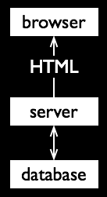

Distributed Web
Changing Web Architecture
Jeni Tennison · @JeniT
Original Web

Dynamic Server-Side Pages
Dynamic Client-Side Pages

Data Integrated Server-Side

Enablers
server-side data integration
- standard data formats
- common-place APIs
Data Integrated Client-Side

Enablers
client-side data integration
- AJAX support
- cross-origin resource sharing
Unhosted Web App

Enablers
unhosted web apps
Proposed Work
new Recommendation
- aimed at web developers
- describing architecture
-
providing design patterns
- publishers of web apps
- publishers of data